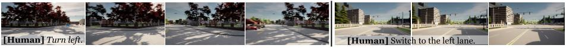

Qualitative closed-loop evaluation
We designed our closed-loop experiment to assess the adaptability and robustness of our autonomous driving sys- tem under various dynamic scenarios.
Examples of closed-loop evaluation, following action-level natural language instructions.

Example of a whole closed-loop evaluation sessio
Quantitative result
SDN
| Model | NfD | RfN | ||||
|---|---|---|---|---|---|---|
| Act↑ | Arg↑ | Move↑ | CIDEr↑ | BERT↑ | M↑ | |
| Seen Environments | ||||||
| TOTO | 41.2 | 36.0 | 40.9 | - | - | - |
| GPT-4 | 53.0 | 44.2 | 11.0 | 0.06 | 0.48 | 0.09 |
| GPT-4V | 52.0 | 29.4 | 6.5 | 0.07 | 0.54 | 0.11 |
|
|
||||||
| DriveVLM | 70.4 | 71.3 | 61.4 | 0.43 | 0.76 | 0.37 |
| DriVLMe (-social) | 68.7 | 69.0 | 19.1 | 0.17 | 0.60 | 0.13 |
| DriVLMe (-embodied) | 68.4 | 67.7 | 62.7 | 0.45 | 0.76 | 0.37 |
| DriVLMe (-domain) | 62.4 | 70.7 | 60.9 | 0.35 | 0.75 | 0.18 |
| DriVLMe (-video) | 60.3 | 72.5 | 42.7 | 0.33 | 0.69 | 0.26 |
| DriVLMe (-planner) | 57.6 | 52.0 | 21.3 | 0.19 | 0.61 | 0.12 |
|
|
||||||
| Unseen Environment | ||||||
| TOTO | 45.8 | 41.1 | 31.0 | - | - | - |
| GPT-4 | 67.5 | 61.3 | 14.5 | 0.05 | 0.47 | 0.08 |
| GPT-4V | 63.5 | 51.6 | 7.5 | 0.07 | 0.53 | 0.13 |
|
|
||||||
| DriveVLM | 70.8 | 71.3 | 68.5 | 0.55 | 0.81 | 0.43 |
| DriVLMe (-social) | 69.8 | 66.8 | 26.9 | 0.25 | 0.64 | 0.16 |
| DriVLMe (-embodied) | 72.9 | 68.0 | 66.7 | 0.52 | 0.79 | 0.42 |
| DriVLMe (-domain) | 65.9 | 70.8 | 65.3 | 0.48 | 0.78 | 0.38 |
| DriVLMe (-video) | 62.6 | 68.6 | 46.5 | 0.41 | 0.73 | 0.31 |
| DriVLMe (-planner) | 58.2 | 59.1 | 23.7 | 0.22 | 0.63 | 0.13 |
Results of open-loop evaluation on the SDN test set.
| Model | Description | Justification | Full | |||||||
|---|---|---|---|---|---|---|---|---|---|---|
| C↑ | B4↑ | R↑ | C↑ | B4↑ | R↑ | C↑ | B4↑ | R↑ | ||
| ADAPT | 219.35 | 33.42 | 61.83 | 94.62 | 9.95 | 32.01 | 93.66 | 17.76 | 44.32 | |
| DriveGPT4 | 254.62 | 35.99 | 63.97 | 101.55 | 10.84 | 31.91 | 102.71 | 19.00 | 45.10 | |
| DriVLMe | 227.05 | 33.39 | 61.02 | 132.17 | 13.39 | 33.18 | 114.16 | 19.59 | 44.83 | |
| Model | Speed | Turning Angle | ||||||||
| E↓ | A0.1↑ | A0.5↑ | A1↑ | A5↑ | E↓ | A0.1↑ | A0.5↑ | A1↑ | A5↑ | |
| ADAPT | 3.02 | 9.56 | 24.77 | 37.07 | 90.39 | 11.98 | 27.93 | 66.83 | 75.13 | 89.45 |
| DriveGPT4 | 1.30 | 30.09 | 60.88 | 79.92 | 98.44 | 8.98 | 59.23 | 72.89 | 79.59 | 95.32 |
| DriVLMe | 1.59 | 22.76 | 50.55 | 70.80 | 99.20 | 33.54 | 61.38 | 70.70 | 76.21 | 91.55 |
Results of open-loop evaluation on the BDD-X test set.
Contact
For any questions, please contact Yidong Huang.